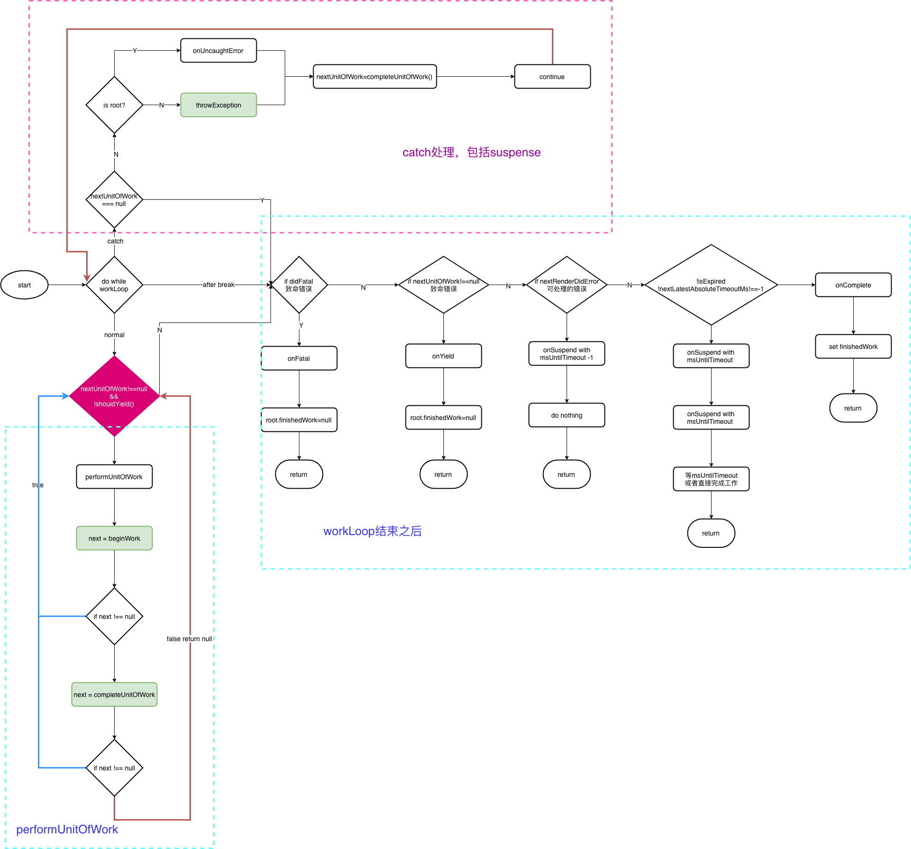
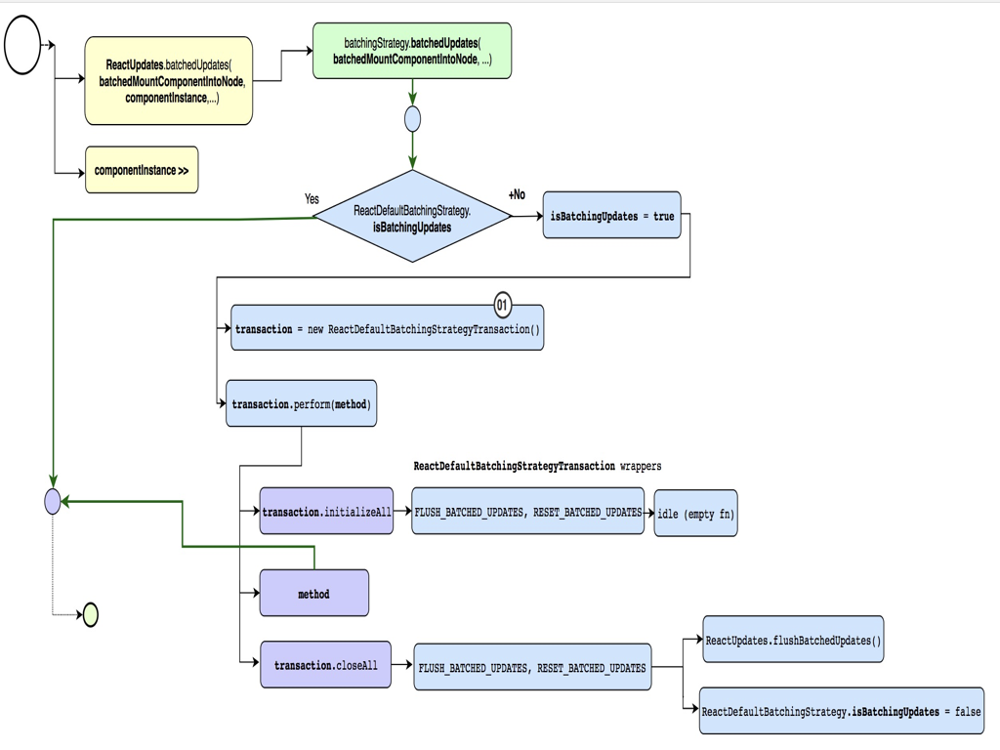

# React 源码解析（二）FiberRoot 构建
Fiber 是对 React 核心算法的重构，也是 React 最重要的概念，这一章从 ReactDOM.render 开始，逐步分析 FiberRoot 的创建过程。
- 创建 FiberRoot
- BatchUpdate 和 setState
# 创建 FiberRoot
我们顺着流程继续分析，jsx 转换后的代码，会在 ReactDOM.render 中进行执行。会依次调用以下几个方法，最终会构建一颗 fiber 树。
- legacyRenderSubtreeIntoContainer
- legacyCreateRootFromDOMContainer
- ReactSyncRoot
- 进入 react-reconciler 库
- 具体通过 createContainer -> createFiberRoot 创建 fiberRoot。
ReactDOM.render 执行时，首先在 legacyRenderSubtreeIntoContainer 方法中执行初始化，然后在 legacyCreateRootFromDOMContainer 方法里给 root 元素打上标识 _reactRootContainer，并调用 ReactSyncRoot 创建 fiberRoot，具体的创建过程在 react-reconciler 中。
首次渲染时采用 ReactSyncRoot 进行同步渲染，不会进入异步调度过程，因为组件需要尽快的完成渲染。最终渲染完成后生成一颗完整的 fiber 树。

# 创建 FiberRoot 具体过程
在 ReactDOM 中可以看到，具体的创建 fiber，更新 fiber，批量更新等过程都是在 react-reconciler 这个库里进行管理的。
import {
updateContainerAtExpirationTime,
createContainer,
updateContainer,
batchedUpdates,
unbatchedUpdates
} from 'react-reconciler/inline.dom';
2
3
4
5
6
7
react-reconciler 负责具体 FiberRoot 的构建，它承载了整个 React 更新调度全部的数据结构。
# 创建 fiber createContainer
在创建 fiberRoot 的同时，还会渲染 children。
// 初始化渲染
let fiberRoot;
// 初次渲染
root = container._reactRootContainer = legacyCreateRootFromDOMContainer(
container,
forceHydrate
);
fiberRoot = root._internalRoot;
// 不使用批量更新
unbatchedUpdates(() => {
updateContainer(children, fiberRoot, parentComponent, callback);
});
2
3
4
5
6
7
8
9
10
11
12
代码中可以看到，第一次渲染时，会调用 unbatchedUpdates 下的 updateContainer 批量更新子节点。
# 更新 fiber updateContainer
updateContainer 方法用来更新 fiber，顺着第一次渲染的情况，调用情况如下：
- updateContainerAtExpirationTime，进入该方法更新 container。
- scheduleRootUpdate 调度根组件渲染。
- 创建 update。
- 调用 enqueueUpdate(current, update) 更新 update 队列。
- scheduleWork(current, expiration Time) 进入异步调度流程。
- renderRoot(root, Sync, true) 渲染 root 组件。
- workLoopSync 执行循环渲染。
- performUnitOfWork(workInProgress)
- beginWork(current, unitOfWork, renderExpirationTime) 创建子节点 fiber。
创建完 Fiber Root 在 unbatchedUpdates 中执行 updateContainer 对容器内容进行更新，更新前会先通过 expirationTime 对节点计算过期时间，具体是通过在 ReactFiberWorkLoop 中 computeExpirationForFiber 进行计算。
do {
try {
if (isSync) {
workLoopSync();
} else {
workLoop();
}
break;
} catch (thrownValue) {
// Reset module-level state that was set during the render phase.
resetContextDependencies();
resetHooks();
const sourceFiber = workInProgress;
// 如果跟节点没有设置 componentDidCatch 生命周期，即没有捕获作物，就会抛出错误。
if (sourceFiber === null || sourceFiber.return === null) {
// Expected to be working on a non-root fiber. This is a fatal error
// because there's no ancestor that can handle it; the root is
// supposed to capture all errors that weren't caught by an error
// boundary.
prepareFreshStack(root, expirationTime);
executionContext = prevExecutionContext;
throw thrownValue;
}
const returnFiber = sourceFiber.return;
throwException(
root,
returnFiber,
sourceFiber,
thrownValue,
renderExpirationTime
);
workInProgress = completeUnitOfWork(sourceFiber);
}
} while (true);
function workLoop() {
// Perform work until Scheduler asks us to yield
while (workInProgress !== null && !shouldYield()) {
workInProgress = performUnitOfWork(workInProgress);
}
}
function performUnitOfWork(unitOfWork: Fiber): Fiber | null {
const current = unitOfWork.alternate;
let next;
next = beginWork(current, unitOfWork, renderExpirationTime);
if (next === null) {
// 如果没有任务，调用执行完成的方法。
next = completeUnitOfWork(unitOfWork);
}
return next;
}
2
3
4
5
6
7
8
9
10
11
12
13
14
15
16
17
18
19
20
21
22
23
24
25
26
27
28
29
30
31
32
33
34
35
36
37
38
39
40
41
42
43
44
45
46
47
48
49
50
51
52
53
54
55
56
reactFiberWorkLoop 其实是一个循环监控的过程，会在执行完一定时间的 requestAnimationFrame 后（具体下一章会讲到），进行其他任务的调度。如果有多个任务 expirationTime 都在 25ms 之内，则会进行批量更新，对应一次 batchedUpdates。
这个超时时间实现的非常精妙，我们拿 computeAsyncExpiration 举例子，在 computeExpirationBucket 中接收的就是 currentTime、5000 和 250 ，最终的公式：((((currentTime - 2 + 5000 / 10) / 25) | 0) + 1) * 25。
ceiling(
MAGIC_NUMBER_OFFSET - currentTime + expirationInMs / UNIT_SIZE,
bucketSizeMs / UNIT_SIZE
);
function ceiling(num: number, precision: number): number {
return (((num / precision) | 0) + 1) * precision;
}
2
3
4
5
6
7
8
翻译一下就是：最终结果是以 25 为单位向上增加的，比如说我们输入 10002 - 10026 之间，最终得到的结果都是 10525，但是到了 10027 的结果就是 10550，这就是除以 25 取整的效果。
其实可以这样理解：
100 / 25 | 0
= 4 | 0
= 4
101 / 25 | 0
= 4.04 | 0
= 4
2
3
4
5
6
7
React 这么设计抹相当于抹平了 25ms 内计算过期时间的误差，那它为什么要这么做呢？
细想了一下，这么做也许是为了让非常相近的两次更新得到相同的 expirationTime，然后在一次更新中完成，相当于一个自动的 batchedUpdates。
# 渲染更新流程分析
在了解了创建 fiber 以及更新 fiber 的流程之后，这里总结了一张渲染更新的过程图，方便理解 renderRoot 时的更新流程。

# BatchUpdate 和 setState
在 react 中，setState 一直是比较重要的概念，接下来我们深入了解一下吧。
# BatchUpdate
首先，我们已经多次的探讨过这个批处理了 batchedUpdates，那么它到底是如何工作的呢？
我们运行以下代码进行测试。
import React from 'react';
import { unstable_batchedUpdates as batchedUpdates } from 'react-dom';
class App extends React.Component {
constructor(props) {
super(props);
this.state = {
count: 0
};
}
test() {
this.setState({
count: this.state.count + 1
});
this.setState({
count: this.state.count + 1
});
}
componentDidMount() {
let me = this;
me.setState({
count: me.state.count + 1
});
console.log('第一次 componentDidMount:', me.state.count);
me.setState({
count: me.state.count + 1
});
console.log('第二次 componentDidMount:', me.state.count);
setTimeout(function() {
me.setState({
count: me.state.count + 1
});
console.log('第一次 setTimeout:', me.state.count);
me.setState({
count: me.state.count + 1
});
console.log('第二次 setTimeout:', me.state.count);
}, 0);
setTimeout(function() {
batchedUpdates(() => {
me.setState({
count: me.state.count + 1
});
console.log('第一次 batchedUpdates:', me.state.count);
me.setState({
count: me.state.count + 1
});
console.log('第二次 batchedUpdates:', me.state.count);
});
}, 0);
console.log('第三次 componentDidMount:', me.state.count);
}
render() {
return (
<div>
<h1>{this.state.count}</h1>
<button onClick={this.test.bind(this)}>增加count</button>
</div>
);
}
}
export default App;
// 第一次 componentDidMount: 0
// 第二次 componentDidMount: 0
// 第三次 componentDidMount: 0
// 第一次 setTimeout: 2
// 第二次 setTimeout: 3
// 第一次 batchedUpdates: 3
// 第二次 batchedUpdates: 3
2
3
4
5
6
7
8
9
10
11
12
13
14
15
16
17
18
19
20
21
22
23
24
25
26
27
28
29
30
31
32
33
34
35
36
37
38
39
40
41
42
43
44
45
46
47
48
49
50
51
52
53
54
55
56
57
58
59
60
61
62
63
64
65
66
67
68
69
70
71
如果你对最后的打印感到疑惑？我们再顺着 batchedUpdates 的流程图，仔细分析一下。

首先我们可以在 react.development.js 文件中给 requestWork 方法打一个 debugger，因为整个 react 的更新调度都会进入到这个函数。接着，批量更新分为两种情况，一种是渲染中的时候并不会进入到 BatchingUpdates。另一种是调用 performWork 通过寻找 findHighestPriorityRoot 最高优先级任务，并执行任务的调度。
图中 Transaction 事务类似一个面向切面编程的概念，将主流程放入 perform 方法中执行，其他的流程必须首先在 wrapper 中的 initialize 方法中进行注册，等到主流程 perform 方法执行完毕之后，才执行对应的 close 方法。
# setState 到底是怎么运行的
在组件已经渲染完成中，setState 是同步执行的，但是不会立马更新，因为他在批量处理中会等待组件 render 才真正触发。不在批处理中的任务可能会立马更新。到底更新不更新要取决于 setState 是否在 Async 的渲染过程中，因为他会进入到异步调度过程。如果 setState 处于我们某个生命周期中，暂时不会 BatchUpdate 参与，因为组件要尽早的提前渲染。
案例
setState 在 componentDidMount 生命周期中，isBatchUpdate 是 true，所以不会进入更新阶段，会被加入到 diryComponent 中，在 Transaction 事务完成之后，isBatchUpdate 会被重置为 false，在下一个循环中就会更新 state。
如果是在 setTimeout 中执行，不会进入到事务流程，直接进行批处理更新，但如果是异步更新，也要遵守 fiber 的调度过程。
# 总结
这一章分析了 ReactDOM 创建 fiberRoot 的过程，以及 BatchUpdate 和 setState 的流程。
这一章结束后还有个疑问，React 具体的异步调度过程是什么呢？我们下一章继续探究~